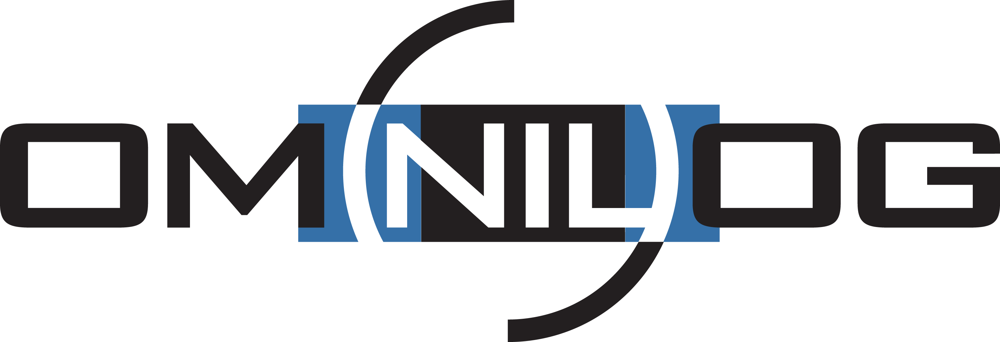

Stage n°2
Installée à NEUILLY-SUR-SEINE (92200), Omnilog est une entreprise spécialisée dans le secteur d'activité du conseil en systèmes et logiciels informatiques. Son effectif est compris entre 100 et 199 salariés. Sur l'année 2021 elle réalise un chiffre d'affaires de 29 997 500,00 €. Le diecteur général d'Omnilog est Johann DROMER.
Mon second stage durait 6 semaines durant lesquelles je devais réaliser un site web proposant chaque jour des questions sur le sujet de la veille technologique afin de sensibiliser les employés aux attitudes à adopter et les reflexes à avoir lorsque l'on utilise un ordinateur dans le monde professionnel.
Pour réaliser ce projet je devais suivre un cahier des charges précis qui me disait ce que j'allais devoir faire. C'est en suivant ce même cahier des charges que j'ai pu structurer mon travail et bien répartir mon temps pour les actions à réaliser.
Je devais réaliser un site web avec le framework pour php : Symfony. Ce site était sur la veille technologique, l'utilisateur se connectait et avait accès à une question quotidienne sur des sujets technologiques et pouvait y répondre.
Sur cette image, vous voyez la page d'accueil du site, là où l'utilisateur peut répondre à sa question du jour.
Sur cette image, vous voyez les statistiques accessibles uniquement par un administrateur
Ce stage aura été pour moi plus intéressant que le premier, il m'a permis de renforcer les connaissances deja acquises lors de ma formation avec Symfony mais également de découvrir d'autres fonctionnalités du framework.
J'ai pu bénéficier d'un soutien que je n'avait pas lors de mon premier stage. Cela aura été une experience enrichissante d'un point de vue personnel et professionnel, cela m'a conforté dans l'idée de travailler dans le domaine de l'informatique apres mes études.